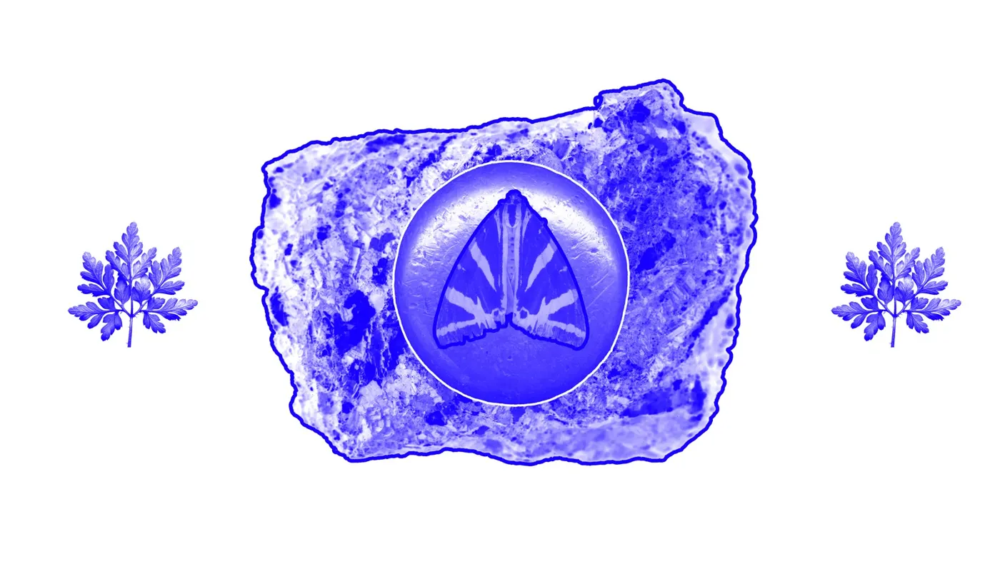
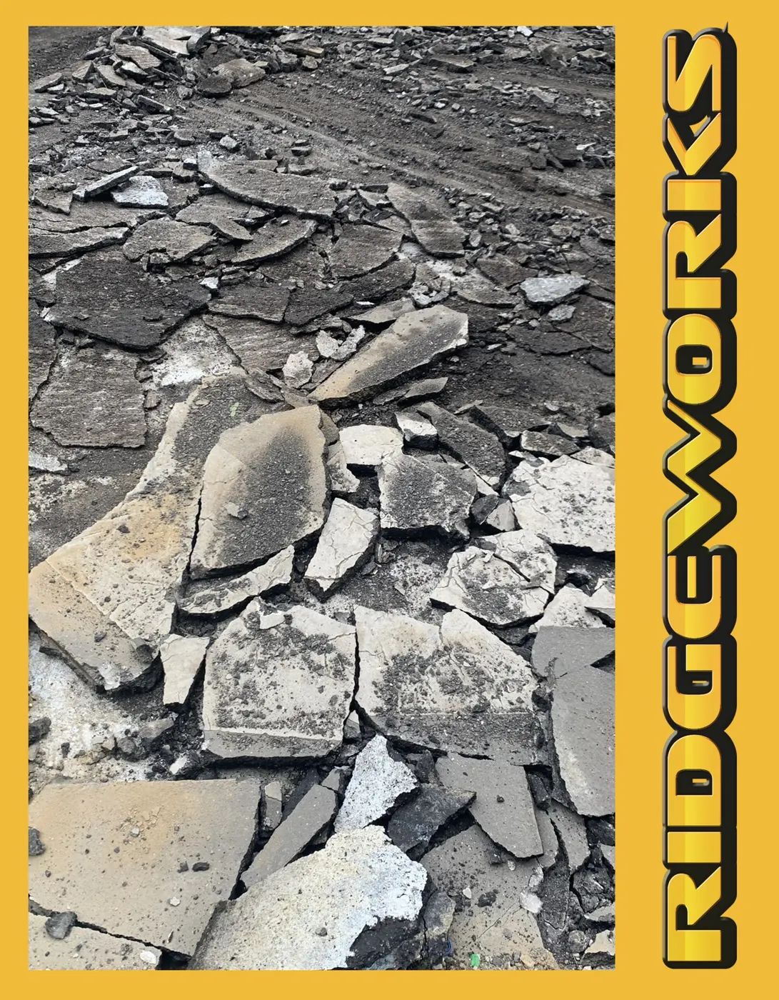
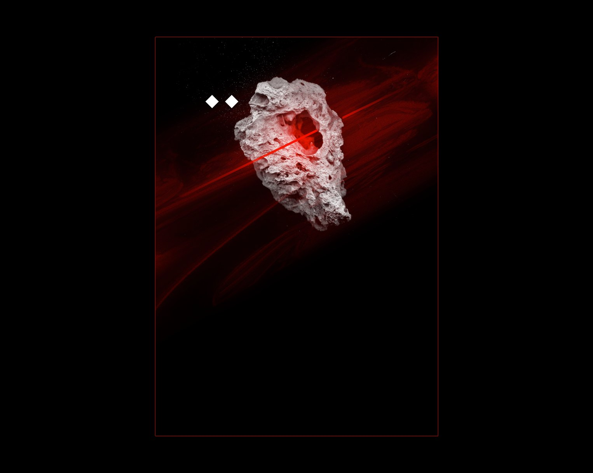

CLVSTR / Recherches choisies
Studies.
Matières scannées, univers graphiques, images et génériques.
9 recherches choisies
MOSS
Scan · matière végétale / 3 images
Trois scans de mousse : densités végétales, filaments et fragments sur fond noir.

Hshtgs
Identité · texture / 3 vues
Mue de serpent scannée, texture et typographie arabe.

Factions
Univers graphique · jeu / 4 compositions
Titre et écrans pour un univers de jeu : Arenas, Continent et Frontera.
Fathaer
Identité · interfaces / 1 affiche
Identité et propositions d’interface.

Manifestes CLVSTR
Composition · collage / 3 compositions
Matières, figures et motifs techniques.

Dead Cat Bounce
Artwork · musique / 1 composition
Second Chance : composition de titre, volumes sombres et lumière cyan.

Ridgeworks
Éditions · affiches / 2 affiches
Photographie minérale et signes typographiques.

Astersea
Image · composition / 2 vues
Volume, lumière rouge et fond noir.